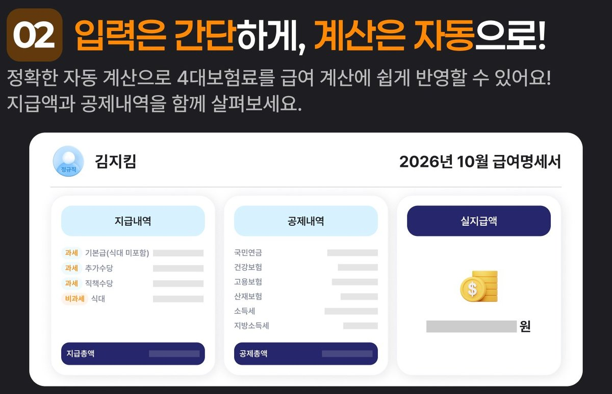
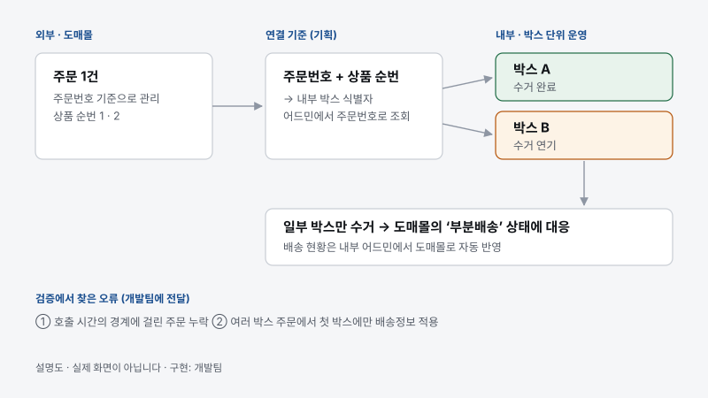
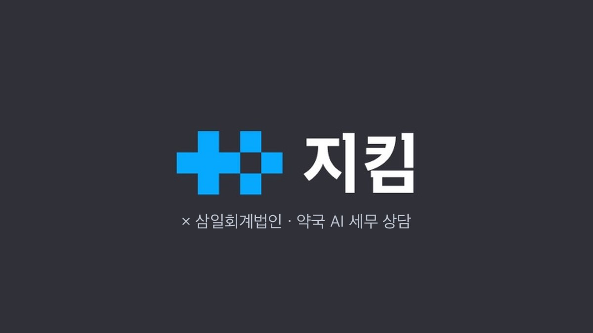
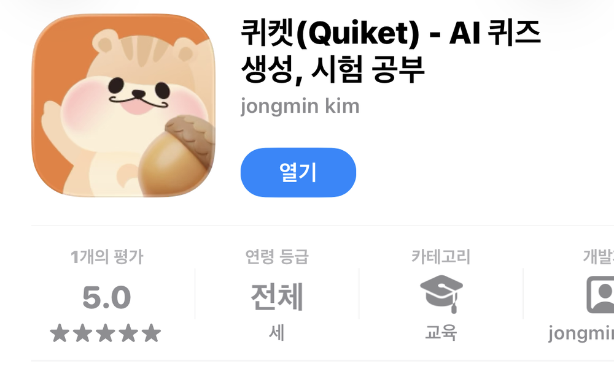

Profile
Inwoo Jang
I was the only planner on a five-person product team at JEEKIM COMPANY. The seven projects featured here cover work from payroll planning and wholesale order integration to running a prescription scanning center.
- Product Manager · IT Planning · AX
- JEEKIM COMPANY, product planning and operations
- Currently in an AI service development bootcamp
- English · Chinese (business level)
Verified evidence
- How the bookkeeping team switched from manual payrollI checked the calculations against the team’s tax software for each type of pay. After launch, some colleagues were still working by hand. I showed them how to check the figures, and the team started using the feature for payroll.
- Launched a quiz app with a team of seven and earned the club’s PM MVP awardAs PM, I first built a proof of concept that used AI to turn study notes into quizzes. I wrote the product specs, coordinated each teammate’s tasks and prepared the user tests. I also gave the midpoint and final presentations. The club recognized my contributions throughout the project.
- Dashcam video competition, our team placed 24th out of 320I built a labeling tool that saves each decision with a keystroke. I also created 300 pairs of original and simulated re-filmed clips for training. My Stage 1 leaderboard score rose from 0.375 to 0.751.
History
All projectsWork experience
- 2024.10 – 2026.06
JEEKIM COMPANY · Product team, product planning and operations
Tax, payroll and prescription storage services for pharmacies. As the only planner on a 5-person team, I defined screens, data, rules and edge cases, checked what was built against the plan with the dev team, and ran the newly opened prescription scan center. Joined as an intern in 2024.10 and became full-time in 2025.01.

Payslip service planningCalculation rules and policy · internal use
Order and box status sync with a pharmaceutical wholesaler’s ordering platformPlanning and verification · went live
AI tax consultation for pharmaciesService rules and screens · in beta
- 2021.12 – 2024.06
J.Mermaid · solo online store founder
Minimum order quantities and relabeling fees tied up cash before items sold. I kept seasonal items and popular products in stock and switched the rest to a buying service. The range grew, and the store reached Power seller status on Naver Smart Store.
Side projects
- 2026.03 – 2026.07
DDD side project · Quiket PM · Club PM MVP
In a side-project club for people working in IT, I was PM of a 7-person team (4 developers, 2 designers). We launched on the App Store and Google Play (team result).

Quiket | an AI quiz study appPM and product planning · production app built by the dev team
Education and training
- 2026.07 – present
AI service development bootcamp (SK Group SKALA, cohort 4)
I designed and built TaxDesk, a financial-income tax consultation demo. In a simulated test, I verified that it asked for missing income before calculating tax.
 TaxDesk | tax consultation on financial incomeDesigned solo · built and verified with AI coding tools
TaxDesk | tax consultation on financial incomeDesigned solo · built and verified with AI coding tools Gwangyebu | feature, screen, ERD and API designDesigned solo · frontend
Gwangyebu | feature, screen, ERD and API designDesigned solo · frontend Making a traffic sign recognition model lighterPair assignment · compression approach and experiments
Making a traffic sign recognition model lighterPair assignment · compression approach and experiments
- 2016 – 2020
Fudan University, Law
Self-directed learning
-
The Web Developer Bootcamp 2025
Studied web development fundamentals: building pages with HTML, CSS and JavaScript, manipulating the DOM, and handling events.
-
Product Management Know-how for Junior PMs
Studied PM roles across the product life cycle, service understanding, roadmaps, problem definition, prioritization, evaluation and retrospectives.
-
Practical Figma Workshop for Product Planners
Studied how to organize flowcharts, wireframes and storyboards in Figma and communicate screen flows through prototypes.
-
PM and Service Planning for Non-majors
Studied service planning fundamentals: defining features and requirements, designing screens, and collaborating with developers and designers.
Skills | and where I used them
| Area | Skills | Where I used them |
|---|---|---|
| Product Planning | PRD · IA · user flow · functional spec · Figma | Product planning at JEEKIM COMPANY, Quiket |
| AI | Spring AI (RAG · the server calls functions defined with @Tool in a set order), LLM APIs, LangChain agent tool restrictions and user approval (team exercise) | TaxDesk, Quiket mini version, Dev Notes |
| Backend | Java · Spring Boot · JPA | TaxDesk, ClassTrack |
| Data | SQL · PostgreSQL · Python | MarketDesk, Labeling tool, Hackathon demo |
| Frontend | Vue 3 · React · TypeScript · Next.js | EDU:UP, Gwangyebu design, ArchiveLink, MarketDesk |
| Collaboration | Notion · Figma · Git/GitHub | Tracking tasks and decisions, screen design, code management |
Languages and certifications
| English | Business: OPIc IH (2026.06). At university I took courses taught in English and led and presented a project for a four-person team of international students. |
|---|---|
| Chinese | Business: 6 years of study in China (high school and university). I negotiated directly with Chinese wholesalers in Chinese and have worked as an accompanying interpreter. |
| Certifications | ADsP (Advanced Data Analytics Semi-Professional) · Certified Accounting Manager · Computerized Tax Accounting, Level 2 · MOS Excel Expert |
Working with me
Careful with the details, flexible when results aren't what we expected, and easygoing the rest of the time.
People call me “the warm robot.” I think and work logically, but I also pay attention to what the people around me are going through.
Open to new opportunities
If you have a Product Manager, IT planning or AX role, get in touch and I'll reply quickly.